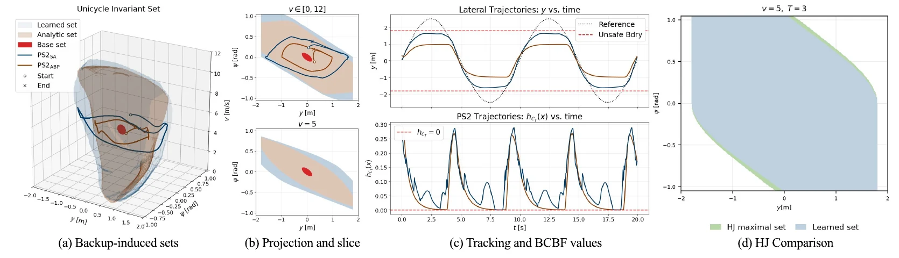
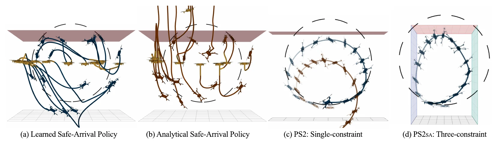
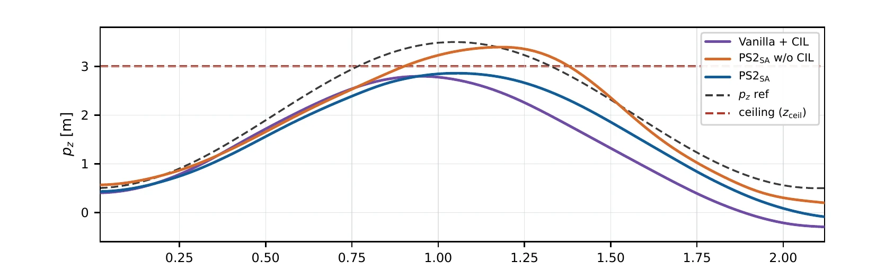

First train a small "get home safely" policy. Then let the task policy do anything, as long as that backup could still bring the robot home. The robot never left the safe set in 10,000 test episodes per task, including a 10-state quadrotor flip.
100%safe episodes on both tasks (10 seeds × 1,000 episodes)
10 statesquadrotor powerloop, where grid-based safe sets are out of reach
0.59 mposition error, against 1.34 m with a hand-made backup
0.62 msper control step on the quadrotor (one V100 GPU)
Paper fig. 1Left: Phase I learns a policy that reaches a small certified set \(\mathcal B\) quickly without leaving the safe set \(\mathcal S\). Middle: that policy is frozen and becomes the backup. Right: Phase II trains the task policy with a layer on top that only lets through inputs the backup can recover from.
02 · The problem
Best reward, with zero violations allowed
\[ \dot x = f(x) + g(x)\,u, \qquad x \in \mathbb R^n,\quad u \in \mathcal U \ \text{(actuator limits)} \]
(1)
The model is known and has no noise. Everything below depends on that.
\[ \max_{\pi}\ \mathbb E\Big[\sum_{k=0}^{\infty} \gamma^{k}\, r(x_k,u_k)\Big] \quad \text{s.t.}\quad \class{c-safe}{x_k \in \mathcal S},\ \ u_k \in \mathcal U \quad \text{for every step } k \text{ and every start } x_0 \in \mathcal X_0 \]
(5)
"Every step, every start" is the hard part. An average cost limit is not enough.
Soft constraints
Penalty, Lagrangian, CPO
Add a cost for breaking the rule and hope the policy learns to avoid it.
No proof. On the quadrotor these were safe in 47% to 99.9% of episodes.
Explicit certificates
CBF, HJ reachability
First compute the set of states you can stay safe from forever, then filter the policy with it.
Proven, but the set is computed on a grid. Example: 100 points per axis × 10 states = 1020 cells.
PS2-RL
Never compute the set
Test one state at a time: simulate a backup policy for \(T\) seconds and see if it gets home safely.
Proven, and the cost grows like \(n^3\) in the state size \(n\), not exponentially.
03 · The building block
Backup CBF: a safe set defined by a rollout
A control-invariant set is a set you can always stay inside with some allowed input. Take a tiny one you can prove by hand, \(\mathcal B\), and a fixed fallback controller, the backup policy \(\pi_b\). Every state from which \(\pi_b\) reaches \(\mathcal B\) in time is then also safe forever.
\[ \class{c-safe}{\mathcal C_T(\pi_b)} = \big\{\, x \;:\; \Phi_{\pi_b}(x,T) \in \class{c-base}{\mathcal B} \ \ \text{and}\ \ \Phi_{\pi_b}(x,t') \in \mathcal S \ \ \text{for all } t' \in [0,T] \,\big\} \]
(2)
\(\Phi_{\pi_b}(x,t')\) = where the robot is after running the backup for \(t'\) seconds from \(x\). \(\mathcal B \subseteq \mathcal C_T \subseteq \mathcal S\), and \(\mathcal C_T\) is control-invariant by construction.
One number per state: the worst safety margin along the rollout, or the margin to \(\mathcal B\) at the end, whichever is smaller. \(x \in \mathcal C_T\) exactly when it is \(\ge 0\).
\[ \pi_b(x) = \begin{cases} \class{c-base}{\pi_{\mathcal B}(x)}, & x \in \mathcal B \\[2pt] \class{c-safe}{\pi_{\rm SA}(x)}, & x \notin \mathcal B \end{cases} \]
(8)
The backup has two parts. Only the first needs a proof. The safe-arrival policy \(\pi_{\rm SA}\) can be any neural net, because \(\mathcal C_T\) is defined by what it actually does.
An LQR controller and a small ellipsoid around an equilibrium \(x^\star\). Unicycle: \(\mathcal B\) spans \(|y| \le 0.21\) m while the lane is \(|y| \le 1.8\) m. The base set is tiny; the backup does the stretching.
Bonus: the safety rule can be written as it is (altitude \(p_z \le 3\) m), even though thrust and body rates act on altitude only through several integrations. The rollout already carries that chain, so no high-order CBF is needed.
04 · Phase I
Learn to get home fast, so the safe set grows
A better backup reaches \(\mathcal B\) from more states, so \(\mathcal C_T\) is bigger and the task policy gets more room. Phase I trains \(\pi_{\rm SA}\) with ordinary RL (TD3 here) on one unusual value function.
\[ Q_{{\rm SA},\beta}(x,u) = \mathbb E\Big[\sum_{k=0}^{\infty} \beta^{k} \Big(\prod_{\tau=0}^{k-1} c(x_\tau)\Big)\, \class{c-base}{b(x_k)}\Big], \qquad \class{c-base}{b} = \mathbb 1[\text{in } \mathcal B],\quad \class{c-fail}{f} = \mathbb 1[\text{failed}],\quad c = 1 - b - f \]
(10)
The product is a gate that closes for good the moment the rollout enters \(\mathcal B\) or fails. So the value is \(\beta^{N}\) if the robot arrives safely in \(N\) steps, and 0 otherwise.
ExampleWith \(\beta = 0.92\) (the unicycle setting): \(0.92^3 = 0.78\), \(0.92^5 = 0.66\). Safe beats unsafe, and among safe rollouts sooner beats later.
The one-step rule that makes it trainable with any Q-learning or actor-critic method. In \(\mathcal B\): \(Q = 1\). Failed: \(Q = 0\). One step from \(\mathcal B\): \(Q = 0 + 0.92 \cdot 1 \cdot 1 = 0.92\).
Sample start states across the region you care about and push the value up. Episodes end at the first entry into \(\mathcal B\) or failure.

Paper fig. 2Unicycle lane-keeping. (a, b) The learned backup's set (blue) is bigger than the hand-made one (brown): it covers 33% of the test grid against 23%. The red dot is \(\mathcal B\). (c) More room means tracking closer to the lane edge, with \(h_{\mathcal C_T}\) touching 0 but never going below. (d) With \(T = 3\) s the learned set covers 98.18% of the largest possible safe set, computed on a grid by HJ reachability.
05 · Phase II
Train the task policy through a safety layer
The backup is now frozen. A control-invariant layer (CIL) sits after the network and moves its output to the nearest input that keeps a safe way home. The layer is differentiable, so the network learns with the layer in place.
In words: the input \(u\) may shrink a margin along the planned backup path only as fast as that margin can afford. Big margin, more freedom. Margin at 0, no shrinking at all.
\(\Psi\) says how the backup path shifts if the start state shifts. \(\Phi\) and \(\Psi\) come from the frozen backup, so they do not depend on \(u\). Each constraint is therefore a straight line in \(u\), and the set is convex.
Any network, even an untrained one, stays in \(\mathcal S\) once the layer is on top, as long as the start state is in \(\mathcal C_T\).
Theorem 4.4
Still expressive
The projected network can approximate any continuous policy that obeys the constraints. The layer does not cap what can be learned.
Theorem 4.2
What it costs
You get the best policy among those this backup can certify. It is the true best safe policy if that one fits inside. A bigger \(\mathcal C_T\) loses less, which is the job of Phase I.
06 · Results
The reference path is unsafe on purpose
Both tasks ask the robot to track a path that leaves the safe set: a sine wave wider than the lane, and a vertical loop that pokes through a 3 m ceiling. A good policy tracks as closely as the limit allows.

Paper fig. 3Quadrotor powerloop, 10 states, thrust and body-rate inputs. (a, b) Backup rollouts: the learned policy (blue) recovers below the ceiling, the hand-made one (brown) often crosses it. Recoverable starts go from 60% to 84%, and near the ceiling from 35.5% to 69.3%. (c) That extra room lets the task policy fly a much rounder loop. (d) Same method with a ceiling and two walls.
Method
Kind
Unicycle safe
y error (m)
Quadrotor safe
p error (m)
SAC, low penalty
penalty
1.8%
0.53
47.3%
1.00
SAC, high penalty
penalty
100%
1.11
99.9%
1.14
SAC-Lagrangian
constrained
30.0%
0.52
58.6%
1.94
CPO
constrained
64.2%
2.51
70.0%
10.62
CBF-RL
certificate
100%
1.75
100%
3.71
MPS (shielding)
certificate
97.8%
0.68
100%
1.99
PS2, hand-made backup
this paper
100%
0.97
100%
1.34
PS2, learned backup
this paper
100%
0.53
100%
0.59
Tracking error is RMSE, shown as the IQM (the average of the middle half of 10 seeds). Safe = share of 10,000 episodes with no violation at all. From the paper's Tables 1 and 2.
ChartQuadrotor position error among the methods that were 100% safe. Learning the backup cuts the error by 56% against the hand-made backup, and by 70% against MPS.

Paper fig. 9Altitude during the loop. Take the layer off after training (orange) and the drone goes through the ceiling.
Quadrotor ablation
Safe
p error (m)
Plain policy + layer added after
100%
0.91
PS2 with layer removed
0%
0.84
PS2 (trained through the layer)
100%
0.50
The layer gives the safety. Training through it gives the performance: 45% lower error than bolting the same layer onto a plain policy. Best single seed, Table 12.
Cost on one V100 GPU
Phase I
Phase II
Per control step
Unicycle (3 states)
14 min
4.35 h
0.34 ms
Quadrotor (10 states, 110 rows)
40 min
12.75 h
0.62 ms
Quadrotor, 3 safety rules (312 rows)
43 min
14.38 h
0.82 ms
Almost 3× more constraints costs 13% more training time and 32% more time per step.
07 · Limits
What the proof does not cover
Exact model needed. The guarantee assumes known, noise-free dynamics \(\dot x = f(x) + g(x)u\) (or a differentiable simulator). Model error and disturbances are future work.
Simulation only. No hardware flights yet, and no camera or sensor-based constraints.
Start inside \(\mathcal C_T\). From a state the backup cannot recover from, nothing is promised.
The layer stays on forever. The network alone is not safe (0% without it). Every control step runs a \(T\)-second rollout and a QP.
The base set is still hand-work. You need an equilibrium, an LQR gain and a small ellipsoid you can verify.
Phase II is slow. About 13 hours for the quadrotor, because every training step solves QPs.